Focus
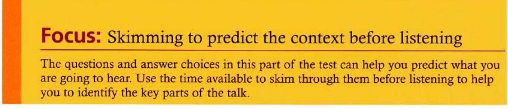
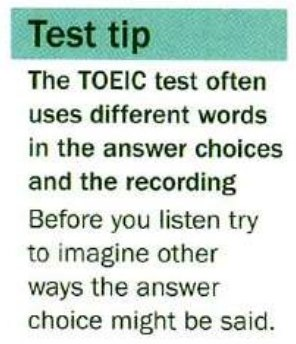
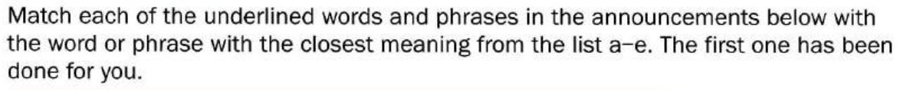
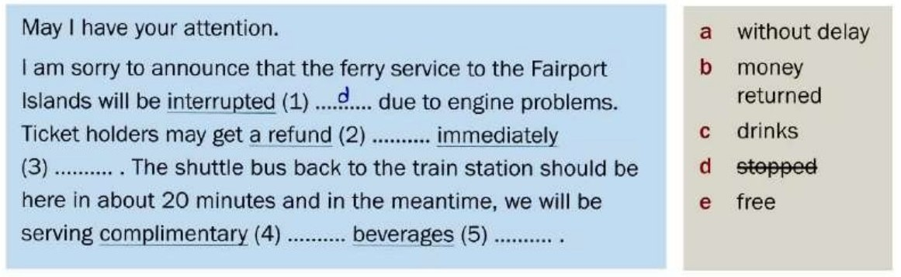
Blank (1) is done for you: interrupted = d, stopped. Match the other four.
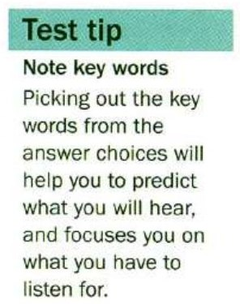
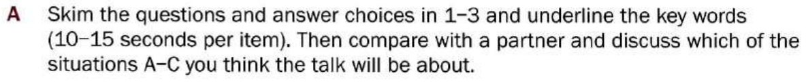
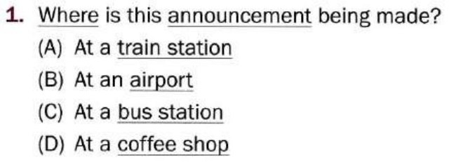
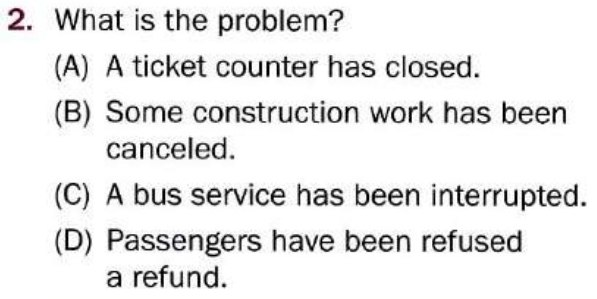
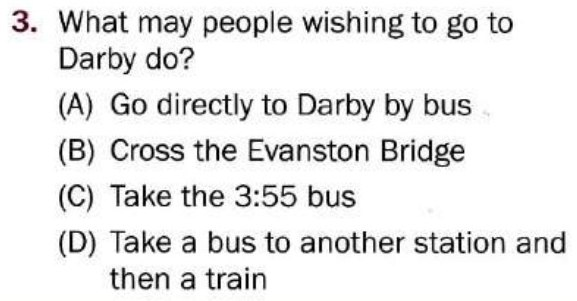
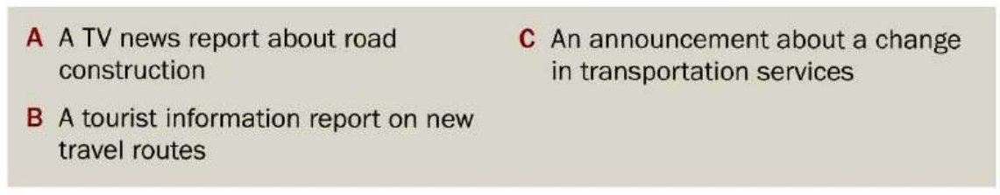
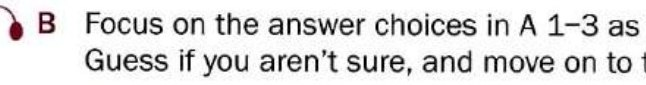
Tapescript
Attention all passengers waiting for the 3:55 bus to the town of Darby. We have just been informed that due to road work on the Evanston Bridge, this service to Darby has been canceled. For ticket holders who wish to continue to Darby today, we are arranging a shuttle bus to take you as far as Dalesville train station, where you may continue your journey by rail. For these passengers we will shortly be serving complimentary tea and coffee while you wait for the shuttle to arrive.
Passengers who do not wish to travel by rail can get an immediate refund for the unused portions of their journey at our main ticket counter.
We apologize for any inconvenience, and hope you will continue to choose Speedy Buslines for your travel needs. Thank you.
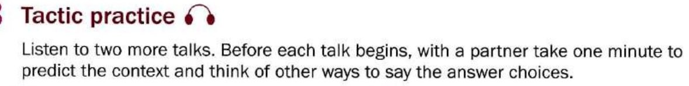
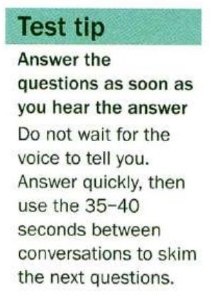
Talk 1 — questions 1–3


Talk 2 — questions 4–6


Tapescript
Looking for the perfect spot for a tropical getaway? The warm sun, crystal blue seas and wealth of secluded beaches on the island of Arabella could be just what you are looking for.
Arabella was established as a major Caribbean trading base, but trade is no longer an important part of the island’s economy, and the beautiful coral reefs now attract visitors from all over the world.
Arabella also hosts world-class events, such as the famous Arabella Sailing Championships held at the end of April and the Caribbean Carnival dance and music festival held in mid October.
Call us today for information on how you can make the perfect winter holiday escape this year. We also offer special March break discounts.
As I am sure most of you have already heard, the deadline for the Q-com project has been changed, which means we now have only five days left to get everything prepared. For that reason, I’d like you, Jack and Cate, to drop what you are doing and lend us a hand checking the documents for any typos from tomorrow. Beth and Howard, I need you guys to finalize the image files by Thursday. And if anyone is feeling helpful, there are about 200 address labels that have to be written.
I realize this has come out of the blue a little, but I think if we all work together we should have plenty of time to get it all done. So, before we all get to work, are there any questions?
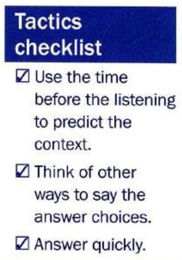
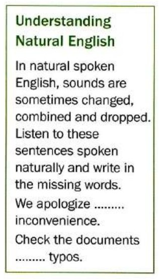
Tapescript
We apologize for any inconvenience.
Check the documents for any typos.
Mini-test
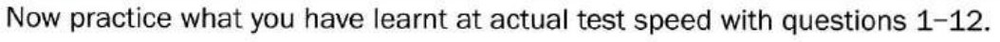
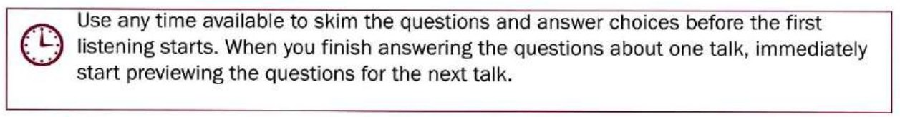
Four talks, three questions each. The audio runs straight through — answer as soon as you hear it, then read ahead.
Talk 1 — questions 1–3
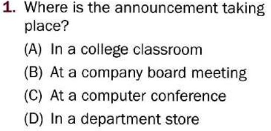
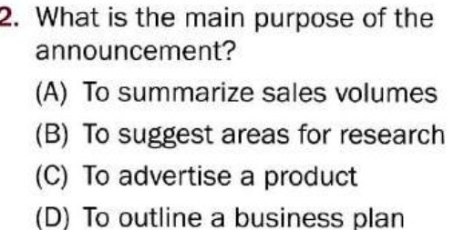
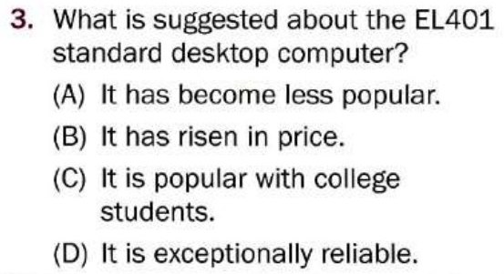
Talk 2 — questions 4–6
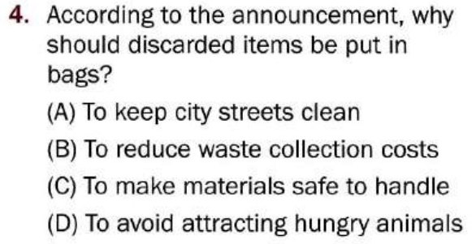
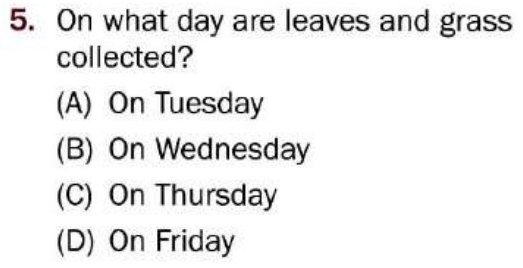
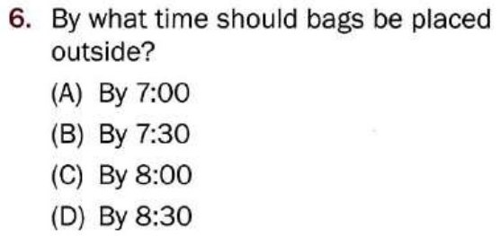
Talk 3 — questions 7–9
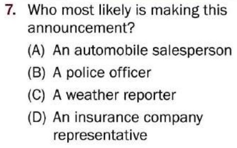
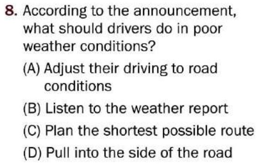
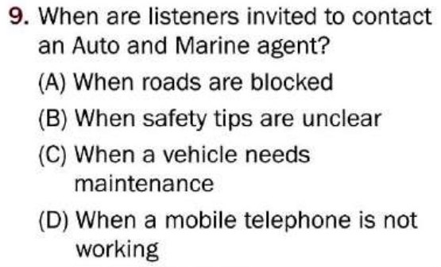
Talk 4 — questions 10–12
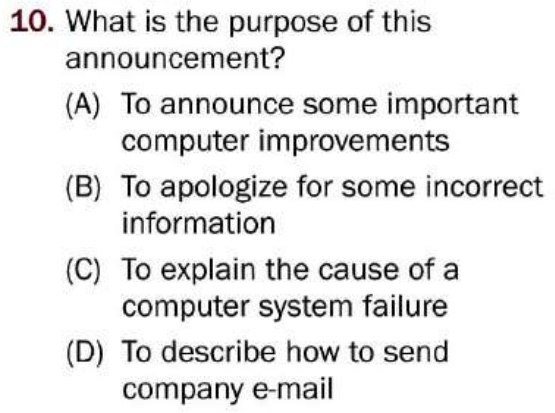
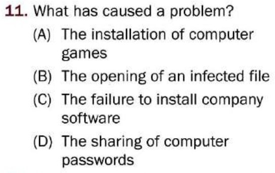
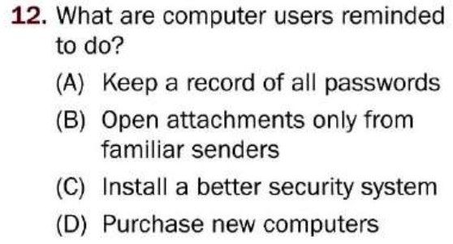
Tapescript — all four talks
Good afternoon, everyone, I am here to summarize the third quarter performance of our EL series computers. I’ll start with the EL501, our top-of-the-line executive laptop. We were pleasantly surprised with the sales of the 501 model. Its impressive performance has resulted in a 17% increase over our sales last quarter. Now, our low-priced EL301: this computer was exceptionally popular, allowing us to boost our sales by nearly 30%. This economy desktop model was especially well received by new college and high school students. Unfortunately the last model in this range, the EL401, didn’t do so well. This standard desktop computer, targeting the small business market, showed a reduction in overall sales of roughly 9%.
Danby Township officials ask you to help them keep your neighborhood clean and attractive. To avoid having items blown around by the wind, please put all discarded food and household items in bags or containers before putting them out for collection. Residential waste collection takes place on Tuesdays and Fridays, and grass and leaves are picked up on Thursdays. Please put grass and leaves in large, open plastic bags and place the bags at the side of the road outside your house or apartment. Remember that the collection service begins at 8:00 a.m., so make sure you put all bags out by 7:30 in the morning.
At Auto and Marine Insurance, we want to be sure that you are well protected when driving. Therefore, we recommend the following safety tips. First, always remember to fasten your seat belt. Statistics show that using a seat belt saves lives each year. Pay special attention when driving in poor weather conditions. Know your route, be sure your vehicle is properly maintained and remember to adjust your driving according to the road conditions. Finally, be sure to turn off your mobile phone or to use a hands-free device so as not to be distracted when driving. If you have questions about these or other safety tips, please contact an Auto and Marine agent.
This is an announcement for all employees. Our computer network went down yesterday afternoon, and our technicians are working to repair the problem. A computer virus has been distributed to company computers as an attachment to e-mails that use the name “News sheet”. Normally, our computer protection system would have isolated the virus on one computer, but this new computer virus was able to bypass security, causing a system-wide failure. We would like to remind all computer users NOT to open e-mail attachments from unfamiliar senders. Thank you for your attention to this matter and your patience while repairs are underway.
Learn by doing: Announcements
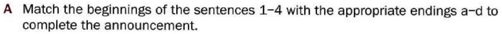
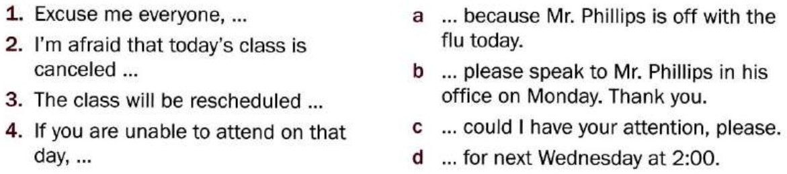
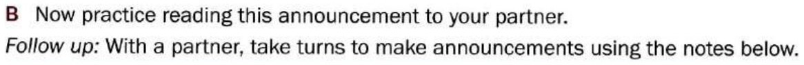
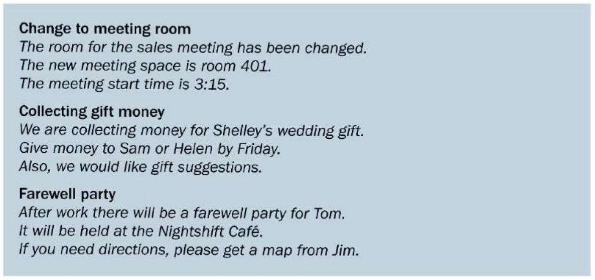
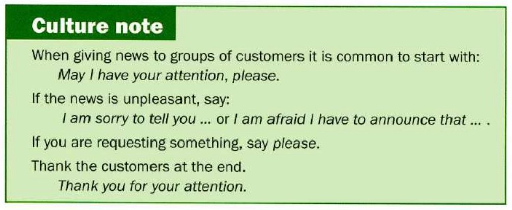
Possible answers
May I have your attention please? I would just like to tell everyone that the room for the sales meeting has been changed. The meeting will be held in room 401, I repeat 401. It starts at the same time of 3:15.
I’d just like to let you all know that we are collecting money for Shelley’s wedding gift. If you would like to contribute, please give your donations to Sam or Helen by Friday. If you have any ideas for a suitable gift, suggestions will be very welcome.
I am sorry to remind you that Tom is leaving, and as this is his last day, we will be having a farewell party for him after work. The party will be held at the Nightshift Café. If you don’t know how to get there, you can get a map from Jim.
Further study
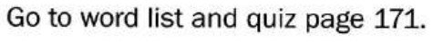
Vocabulary practice
The 30 words behind this unit, drilled four ways — meaning, context, speed, then spelling. Anything you get wrong comes straight back before the round ends, and the game keeps asking about your weakest words. Replay it as often as you like.